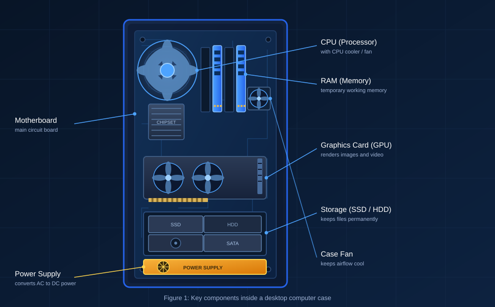

Review: Lessons 1 to 4
This page sums up what I've learned so far in CC 101.
Lesson summaries
Lessons 1 to 4 at a glance
| Lesson | Summary |
|---|---|
| Lesson 1: The Computing Industry & Profession | Introduced the different sectors of the computing industry — hardware, software, IT services, networks, data, and games. Also explained why computing is still a young, fast-changing profession compared to fields like law or medicine. |
| Lesson 2: Computing in Different Fields | Showed how computing works like a general-purpose tool used across many fields, including biology and healthcare, sociology, the environment, and gaming. Real case studies made it clear computing speeds up research in every one of them. |
| Lesson 3: History of Computing | Traced how computing devices evolved from the abacus to modern smartphones, and introduced key contributors such as Ada Lovelace, Alan Turing, and Grace Hopper. Reporting groups also discussed how computing changed society and culture. |
| Lesson 4: Key Components of Computer Systems | Covered the CPU and RAM as the "thinking" parts of a computer, storage devices (HDD, SSD, cloud) and input/output devices, plus how these pieces are organized and managed by an operating system. |
Lesson 3
Evolution of computing devices
-
Ancient
Abacus
An ancient manual calculation tool, used long before electricity.
-
1642 – 1837
Mechanical calculators
Pascal's Calculator (1642) and Babbage's Analytical Engine (1837).
-
1945
Vacuum tubes & ENIAC
One of the first large electronic computers.
-
1950s – 1970s
Transistors & integrated circuits
Made computers smaller, faster, and cheaper.
-
1970s – 1980s
Personal computers
The Altair 8800, Apple II, and IBM PC brought computers into homes.
-
Today
Smartphones
Far more computing power than ENIAC, now fits in a pocket.
Lesson 4
Labeled computer parts

The CPU executes instructions and acts as the "brain" of the computer. RAM is temporary, volatile memory used for whatever the computer is actively working on.
- CPU — processes instructions
- RAM — short-term working memory
- Storage — keeps data permanently
- Motherboard — connects everything
- Power supply — delivers electricity